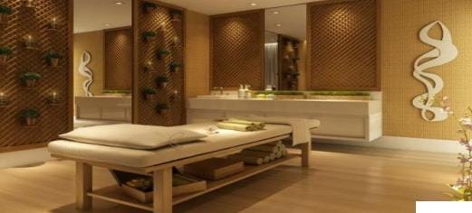
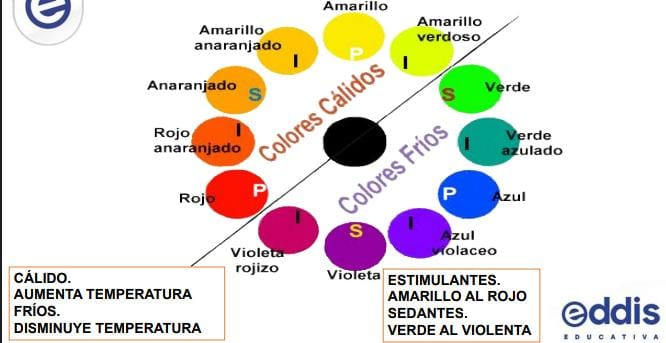
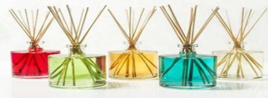
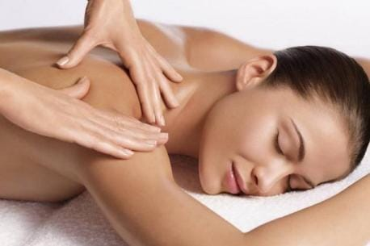

Para el armado del gabinete prestaremos atencion a los 5 sentidos: oido, vista, tacto, olfato, gusto.
La musica se ha utilizado para la sanacion fisica y espiritual desde tiempos ancestrales. La musicoterapia comenzo a desarrollarse formalmente como una profesion despues de la Segunda Guerra Mundial, cuando se observo que la musica podia facilitar la rehabilitacion fisica y la recuperacion del trauma emocional en los veteranos de la guerra.
El impacto energetico o radiacion de la gama cromatica es recibido po nuestro cerebronactivamente, y responde con unos efectos exclusivos para cada color.
Estudios respaldan la teoria, que los colores tienen un impacto en nuestras vidas. No solo lo hace en nuestro consciente, alma y espiritu, sino que el color puede cambiar la manera en la que trabajamos y somos productivos.
Afecta a nuestro estado de animo y tiene un alto impacto en nuestro sentido del bienestar.
Es de la naturaleza, extraido de las plantas, hierbas, flores, captando la esencia de las mismas.
Pertenece a las terapias holisticas que consideran al Ser como un todo, y conocer lo fisico, mental, emocional y espiritual.
Trabaja a traves de las propiedades que tienen los aceites esenciales sobre nuestros sistemas, y se incorporan a nuestras vidas por medio del olfato, el aura y la piel.
Debemos tener cuidado con cuanta intensidad hacemos el masaje, si nuestras manos estan frias o muy calientes, si lo hacemos muy suave o muy fuerte, etc...
Tener siempre en cuenta los pequeños detalles es lo que nos va a distinguir de los demas y va a provocar que los pacientes vuelvan.
Mientras esperan podemos darle algun caramelo, cafe, jugo, o alguna masita.